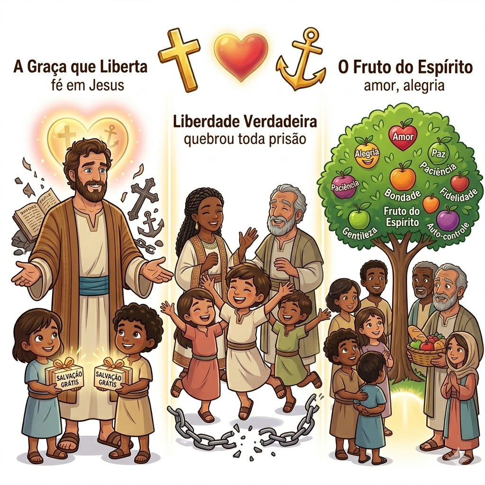
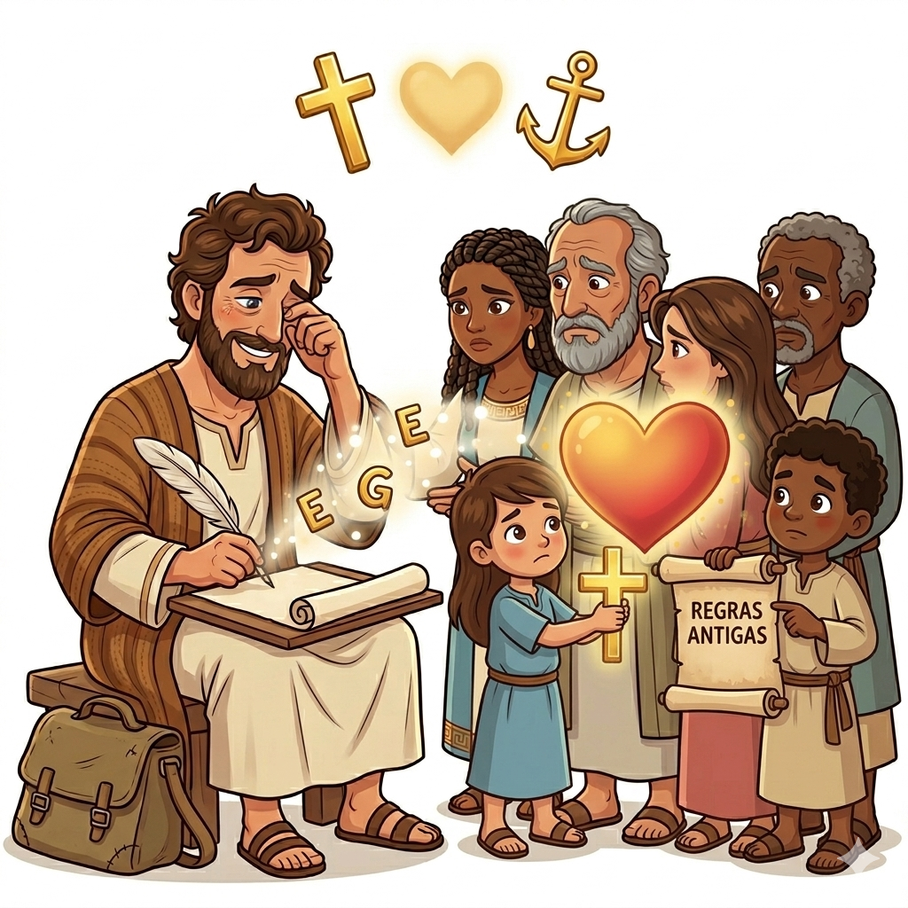
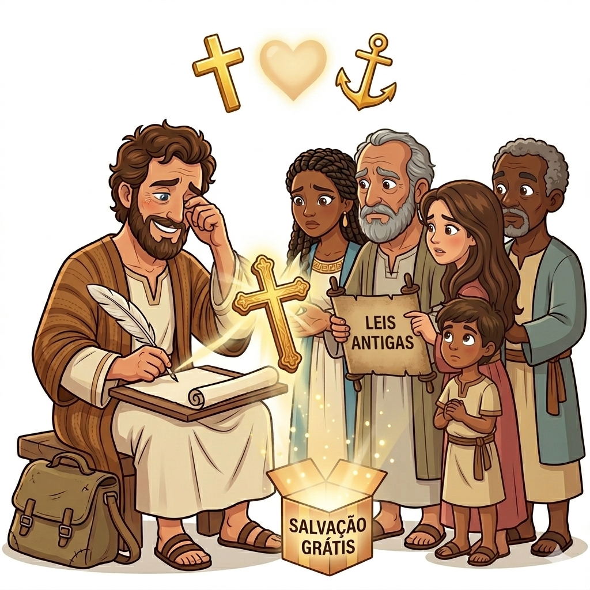
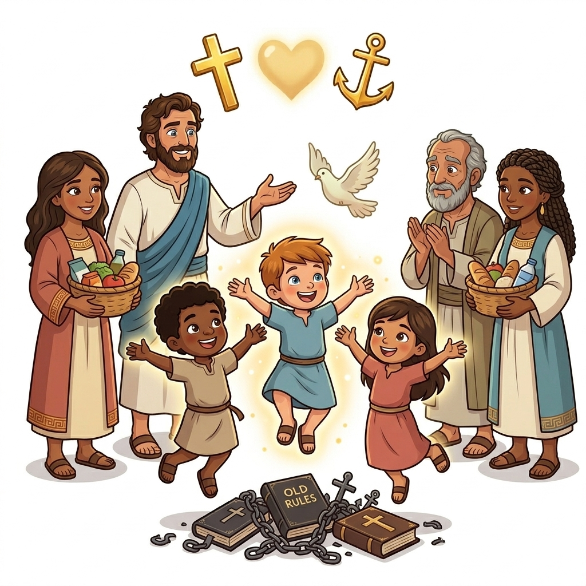
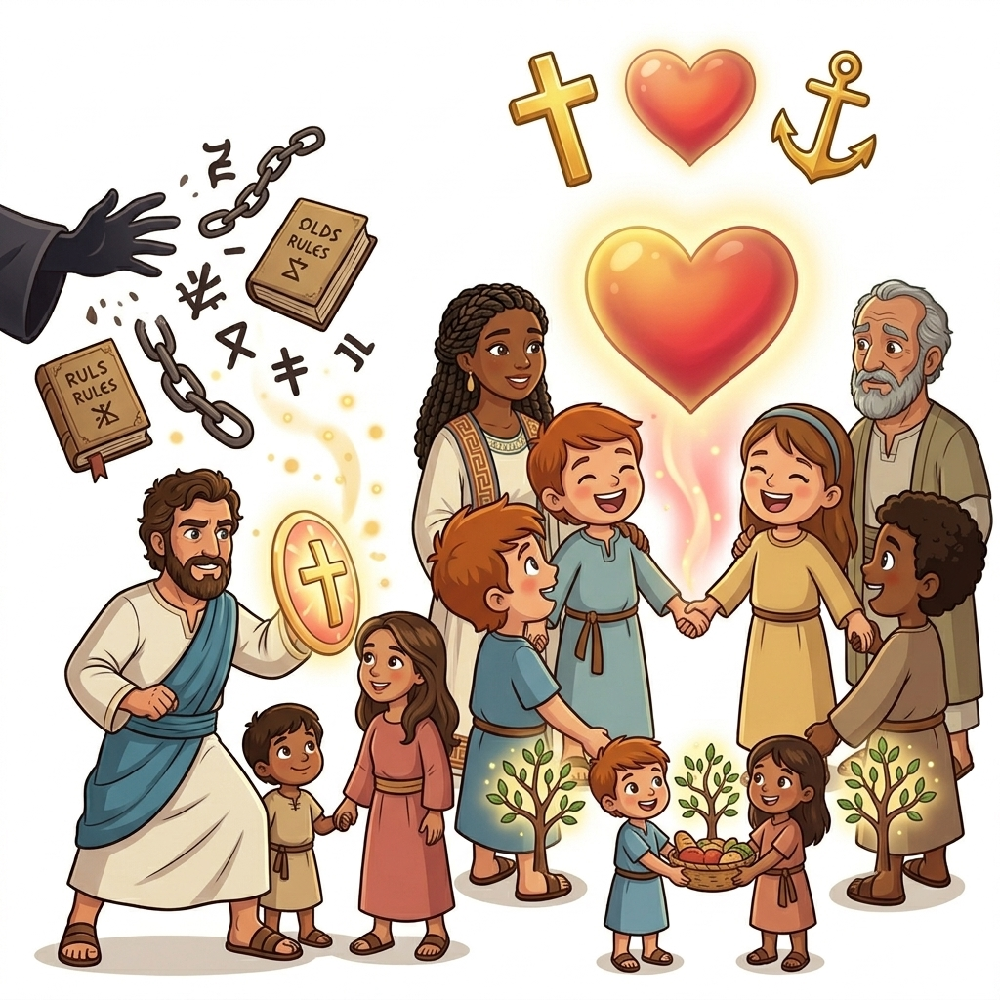
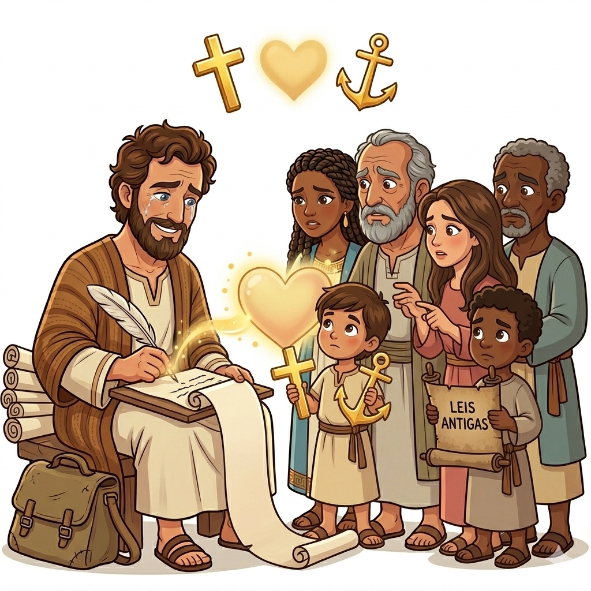

A Carta da Liberdade em Cristo — Um Resumo Visual para Crianças
Não são regras que salvam o coração,
É a fé em Jesus, nossa salvação!
Pela graça somos livres, sem precisar ganhar,
O amor de Deus é presente, só precisamos aceitar!
📖 "Porque pela graça sois salvos, por meio da fé" - Gálatas 2:16
Cristo nos libertou, quebrou toda prisão,
Não vivemos mais escravos, temos nova direção!
Livres para amar, livres para servir,
Em Cristo somos filhos, podemos sorrir!
📖 "Para a liberdade foi que Cristo nos libertou" - Gálatas 5:1
Quando o Espírito em nós vem morar,
Amor, alegria começam a brotar!
Paz, paciência, bondade sem fim,
São frutos lindos que crescem em mim!
📖 "Mas o fruto do Espírito é amor, alegria, paz..." - Gálatas 5:22-23
Paulo era um missionário corajoso que amava Jesus e queria que todos conhecessem a verdade do evangelho. Ele escreveu esta carta aos cristãos da região da Galácia.
Eram pessoas que haviam crido em Jesus, mas estavam confusas. Alguns falsos mestres diziam que precisavam seguir regras antigas para serem salvos. Paulo escreveu para corrigir esse erro!


Paulo ensina uma verdade maravilhosa: a salvação vem pela fé em Jesus, não pelas regras antigas!
Alguns diziam: "Vocês precisam seguir todas as leis do Antigo Testamento para serem salvos!" Mas Paulo explicou: "Não! Jesus já fez tudo por nós na cruz!"
✨ Não precisamos fazer nada para merecer o amor de Deus. Ele nos ama de graça! Só precisamos crer em Jesus com o coração!
Gálatas nos ensina que em Cristo somos verdadeiramente livres! Não vivemos mais presos tentando seguir um monte de regras para agradar a Deus.
Jesus já nos libertou! Agora vivemos pelo amor e pelo Espírito Santo que mora em nós.
"Para a liberdade foi que Cristo nos libertou!"
- Gálatas 5:1


Paulo escreveu Gálatas para defender o verdadeiro evangelho - a boa notícia de que somos salvos pela graça, não pelas obras!
Ele também queria lembrar que todos são filhos de Deus pela fé em Jesus. Não importa quem você é ou de onde veio - em Cristo, somos todos uma família!
💙 Você é filho amado de Deus!
Gálatas foi uma das primeiras cartas que Paulo escreveu! Provavelmente foi escrita por volta do ano 48-49 d.C., logo depois de sua primeira viagem missionária.
Paulo estava tão preocupado com os cristãos da Galácia que escreveu rapidamente para corrigir os falsos ensinamentos antes que se espalhassem!
📜 Esta carta tem quase 2.000 anos e ainda nos ensina sobre liberdade e graça!

© 2025 - Trilho Kids
Desenvolvido com ❤️ para crianças